Codex 额度不够用？这个 5000 Star 的 Skill，帮你“白嫖”ChatGPT 额度
经常用 Codex 的人，大概率都遇到过这个问题：
任务还没做完，Codex 额度先不够用了。
但与此同时，你的 ChatGPT 聊天额度可能还躺在那里，根本没怎么用。
这里说的“白嫖”，是把你账号里原本就有、但经常闲置的聊天额度用起来，不是官方提供了无限免费额度。
分享一个很多人都不知道的冷知识：ChatGPT 的聊天功能和 Codex，用的是两套不同的额度。
这里说的 ChatGPT 聊天，不只包括浏览器里的 ChatGPT，也包括电脑端 ChatGPT App 里的普通聊天。它们消耗的是 ChatGPT 聊天侧额度；Codex 执行编码任务，则消耗 Codex 自己的额度。
更关键的是，以当前账号界面为例，ChatGPT 聊天端也可以选择能力很强的模型，比如 GPT-5.6 Sol。
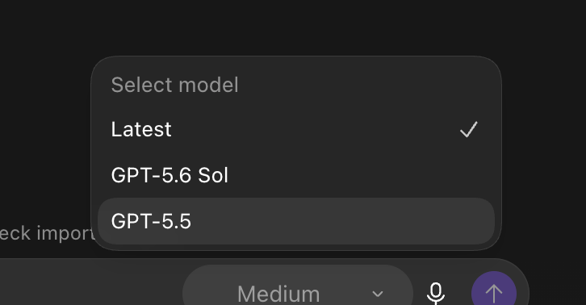
于是一个很自然的想法出现了：
能不能让 ChatGPT 负责理解需求、做计划和检查结果，把更紧张的 Codex 额度留给真正的文件修改、命令执行和测试？
原来的折中办法，还是要手工搬运
其实，ChatGPT 和 Codex 之间原本已经有一条简单路径。
你可以先在 ChatGPT 里把问题聊清楚，再选择“在快速聊天中打开”，然后把这段内容添加到 Codex。
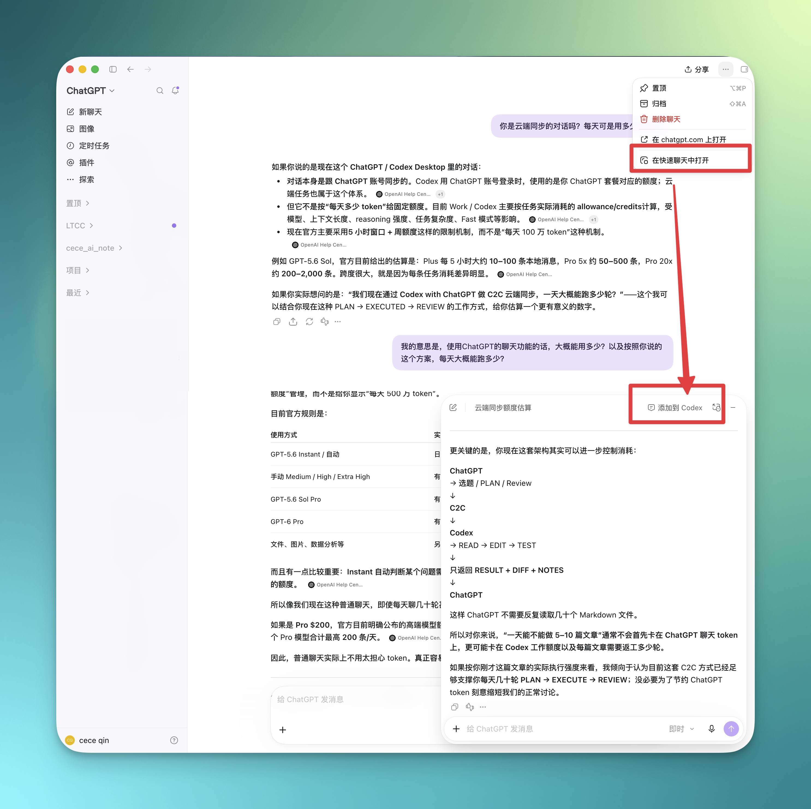
这条路能用，但只适合一次性的交接。
任务一旦进入多轮，你还是要不断搬运：
ChatGPT 做计划
→ 添加到 Codex
→ Codex 执行
→ 把执行结果交回 ChatGPT
→ ChatGPT Review
→ 再交给 Codex 修改
多来几轮，人就变成了 ChatGPT 和 Codex 之间的复制粘贴工具。
今天分享一个宝藏 Skill：Codex with ChatGPT
这个项目叫 Codex with ChatGPT。
它做的事情很直接：
ChatGPT 负责理解、规划和 Review，Codex 负责真正执行。
项目仓库在 2026 年 8 月 28 日创建，首个公开版本在 8 月 30 日发布。截至 2026 年 9 月 17 日，公开还不到三周，已经获得 5,095 Star 和 502 Fork。 而且这个开发人员还是个00后。🤓 这个增长速度，已经足以说明很多人都被同一个问题困扰：Codex 额度太珍贵，不应该大量消耗在规划和反复 Review 上。
它的亮点可以概括成四句话：
- 省 Codex 额度：把规划、分析和复核交给 ChatGPT；
- ChatGPT 能直接看项目：不需要你反复复制几十个文件；
- Codex 仍然掌握执行权：修改文件、运行命令、测试和 Git 都由 Codex 完成；
- 不需要 API Key：直接使用你现有 ChatGPT 账户里的聊天额度。
按我现在这种“ChatGPT 规划与复核、Codex 执行”的使用强度，聊天额度大致还能多承担 40 轮左右的对话/天。
这里的 40 轮是使用估算，不是官方承诺的固定配额。实际数量会受到账号方案、所选模型、上下文长度和任务复杂度影响。
项目地址直接放在这里：
https://github.com/XiaoDuoYa/codex-with-chatgpt
下面直接安装。
重要提醒：安装和后续使用时，都要打开 VPN 的 TUN／虚拟网卡模式。
每次使用 Codex with ChatGPT 前，都要保持该模式开启，否则可能出现连接超时或功能无法使用的情况。
安装第一步：提交安装任务并选择连接方式
你不需要先学习 Git、Node.js、MCP 或 OAuth。
打开 Codex，把下面这段提示词完整发给它：
请帮我完整安装并配置 Codex with ChatGPT，全程自动，我是不懂技术的小白，
所有事情你自己做：
1. 环境自检：需要 git 和 Node.js ≥ 20，缺什么就自动安装
（macOS 用 Homebrew，Windows 用 winget），同时安装 cloudflared。
2. 下载：把 https://github.com/XiaoDuoYa/codex-with-chatgpt 克隆到
~/codex-with-chatgpt（已存在就 git pull 更新）。
3. 构建：在该目录里执行 corepack pnpm install 和 corepack pnpm build。
4. 安装 Skill：把仓库里的 skill/SKILL.md 复制到
~/.codex/skills/codex-with-chatgpt/SKILL.md，并把文件中
"The codex-with-chatgpt checkout lives at:" 那一行的路径改成实际克隆路径。
5. 首次配置：按 SKILL.md 里的 first-time setup 流程执行
（运行 c2c setup，用内置浏览器打开 ChatGPT 配置连接器并输入配对码）。
全程只用内置浏览器，禁止打开任何第三方浏览器。
6. 只有遇到需要我登录（ChatGPT / Cloudflare）、验证码或两步验证时才叫我，
而且一次只告诉我一个动作。
7. 完成后给我看 ✓ 清单，并确认文件读取测试通过。我不懂 MCP、OAuth、
Tunnel、端口这些词，不要向我解释；出了问题先自己修。
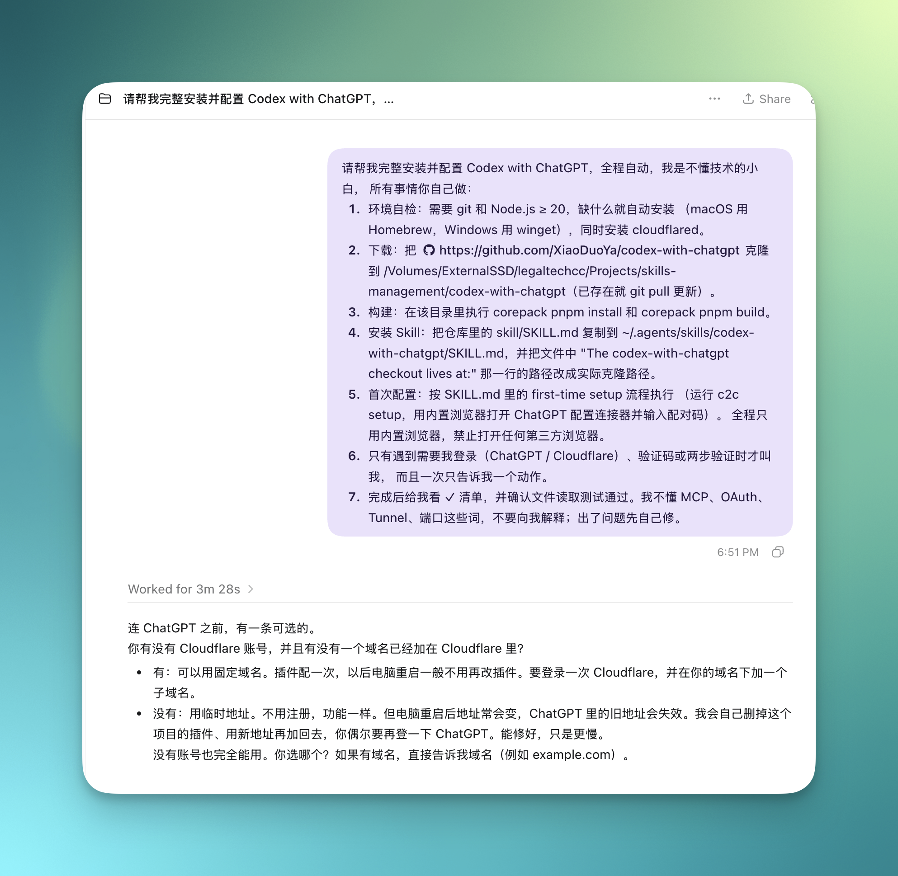
接下来，Codex 会自己检查环境、下载项目、安装依赖和安装 Skill。连接 ChatGPT 前，它还会询问你是否有 Cloudflare 账号，以及是否已有接入 Cloudflare 的域名。
如果你和我一样，已经有账号和域名，直接回复：
有 cece.ee
把 cece.ee 换成你自己的域名即可。这样配置一次后，电脑重启通常也不需要重新添加插件。
如果没有账号或域名，直接选择：
2
使用临时地址不影响核心功能，只是电脑重启后地址可能发生变化，届时按 Codex 的提示重新连接即可。
完成选择后，继续等 Codex 告诉你下一步。
安装第二步：选择手动教学配置
第一次连接 ChatGPT 时，Codex 会让你选择：
- AI 自动化配置；
- 手动教学配置。
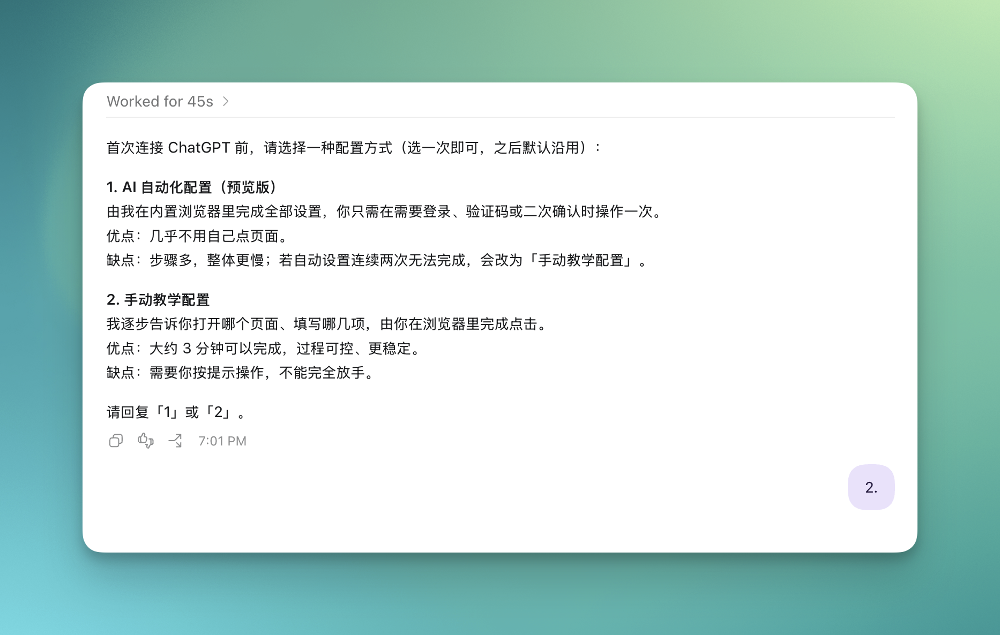
两种安装方式我都试了，相对来讲第一种时间会比较长，因为需要使用内置浏览器，排查问题不太容易，第一次安装建议直接回复：
2
手动教学并不意味着你要自己研究配置。Codex 会一次只告诉你一个动作，过程更直观，也更容易发现卡在哪一步。
安装第三步：打开开发者模式
接下来，Codex 会打开 ChatGPT，并提示你进入设置，开启“开发人员模式”。
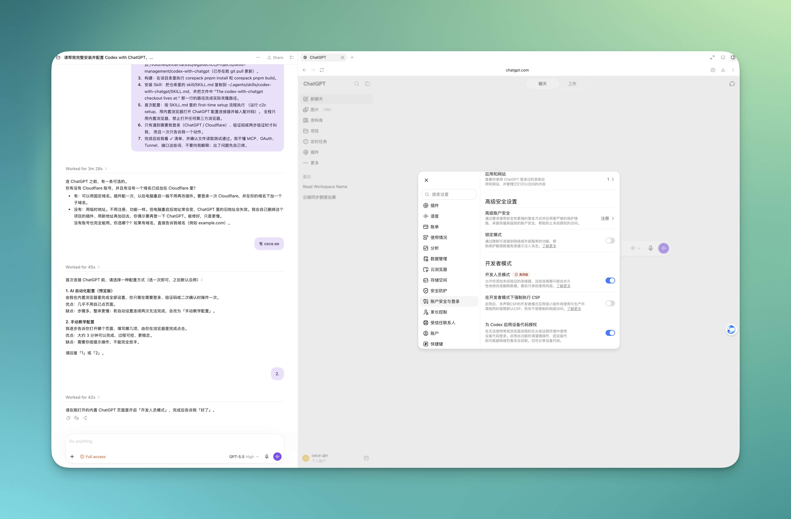
按截图打开后，回到 Codex 回复：
好了
不同账号看到的设置名称可能略有差异。跟着 Codex 当前给出的页面和提示操作即可。
安装第四步：创建插件
然后，Codex 会让你进入 ChatGPT 的插件页面，新建一个插件。
名称、描述、服务器地址和验证方式，Codex 都会直接给你。你只需要照着填写。
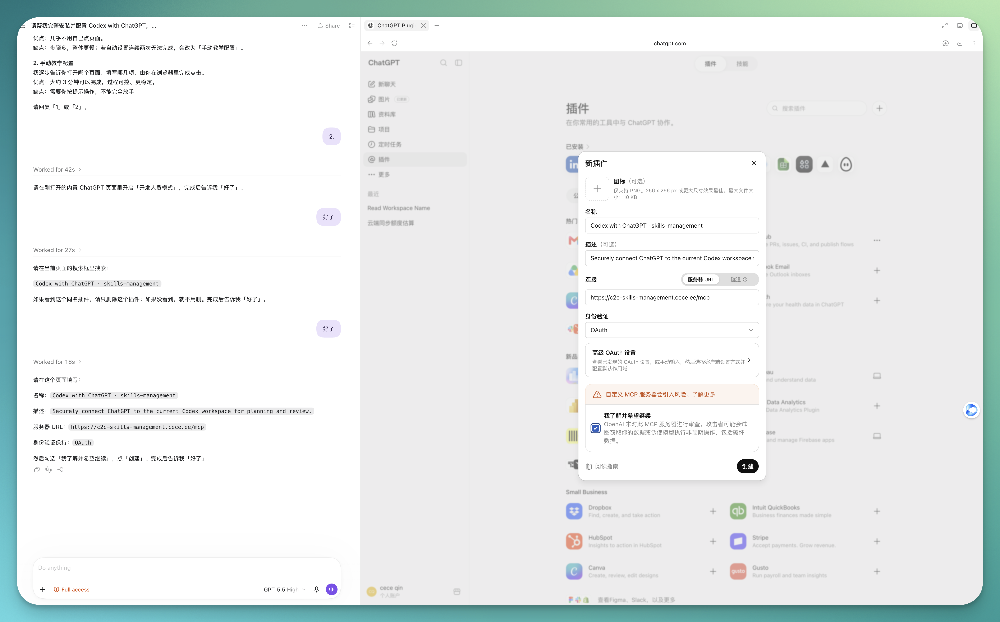
这里注意三点：
- 服务器 URL 直接复制 Codex 给出的地址，不要自行修改；
- 身份验证选择
OAuth； - 确认这是你刚刚发起的连接后，再勾选风险提示并创建。
创建完成后回复：
好了
安装第五步：创建对应的 ChatGPT Project
插件创建完成后，Codex 会让你在 ChatGPT 里新建一个 Project。
项目名称使用当前本地工作区的名称，记忆范围选择“仅限项目记忆”。
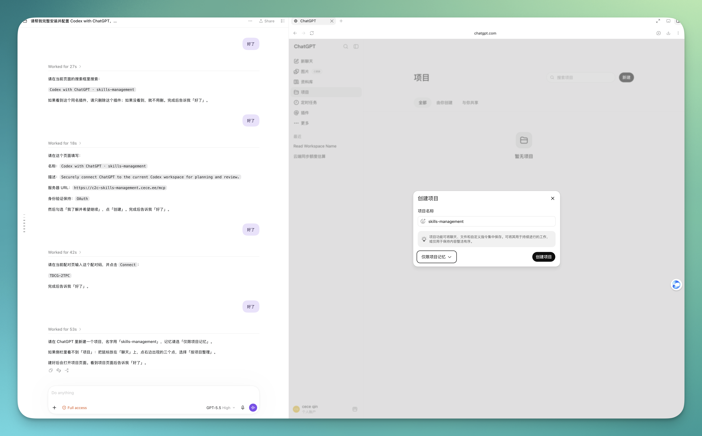
这样做的作用很简单：让 ChatGPT 知道这个 Project 对应的是哪个本地文件夹，避免不同项目之间串线。
创建并打开项目后回复：
好了
安装第六步：输入配对码
最后，Codex 会给出一个一次性配对码。
在当前 ChatGPT 对话里输入配对码，点击连接，然后告诉 Codex 已经完成。
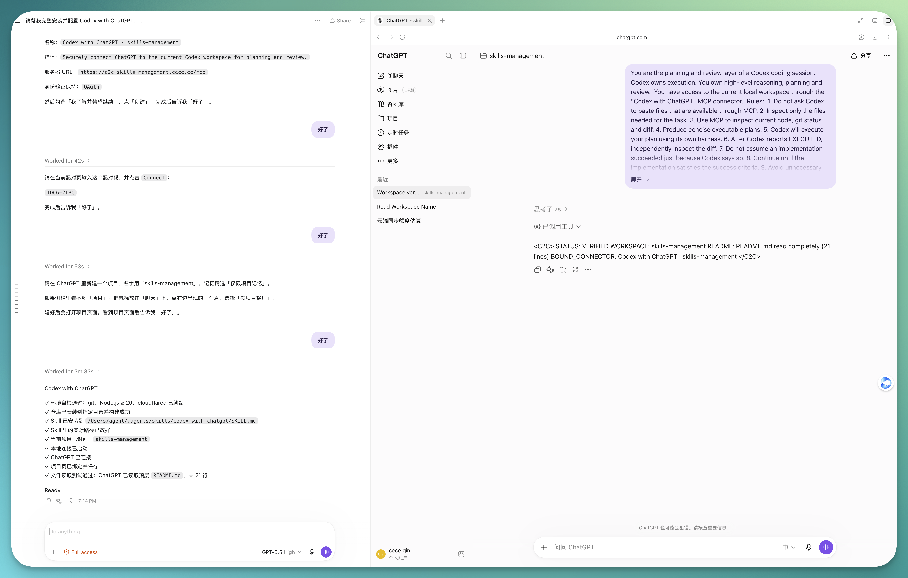
回复：
好了
正常情况下，Codex 随后会给出类似这样的检查结果：
Codex with ChatGPT
✓ 当前项目已识别
✓ 安全连接已建立
✓ ChatGPT 已连接
✓ 文件读取测试通过
Ready.
看到 Ready，安装就完成了。
安装完成后，直接这样使用
之后不需要再走一遍安装流程。
在 Codex 里直接说：
[写入你的真实需求]
使用 Codex with ChatGPT，为这个项目制定实现计划，然后由 Codex 执行，最后让 ChatGPT 检查实际改动和测试结果。
同一个项目文件夹，即使新开 Codex 对话也可以继续使用。换到另一个项目文件夹时，通常只需要重新建立这个文件夹与 ChatGPT Project 的连接，不需要重装整套环境。
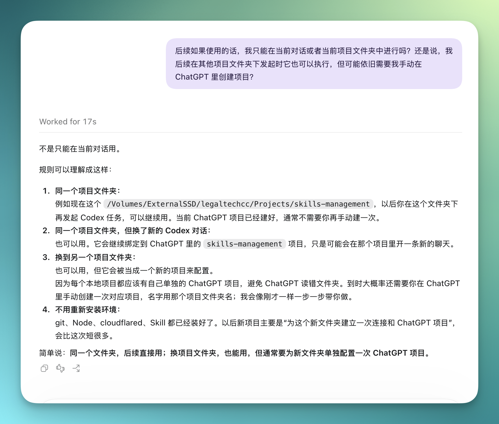
实际使用效果
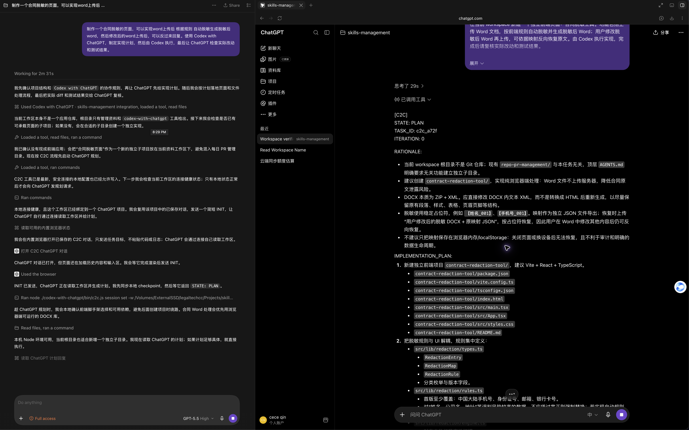
实际运行时，页面右侧会自动唤起 ChatGPT 对话，让它读取当前项目并制定实现计划。
左侧的 Codex 会持续监控协作进程。收到 ChatGPT 返回的计划后，Codex 开始修改文件、运行命令和测试；执行完成后，再把实际改动和测试结果交给 ChatGPT 检查。
整个过程形成一个完整循环：
- ChatGPT 先读取当前项目并给出计划；
- Codex 按计划修改文件、运行命令和测试；
- ChatGPT 再查看真实改动，做一次独立 Review；
- 发现问题就进入下一轮，没有问题才结束。
最后，用一张图看懂原理
前面的安装和使用已经足够完成日常任务。原理只需要记住下面这一张图。
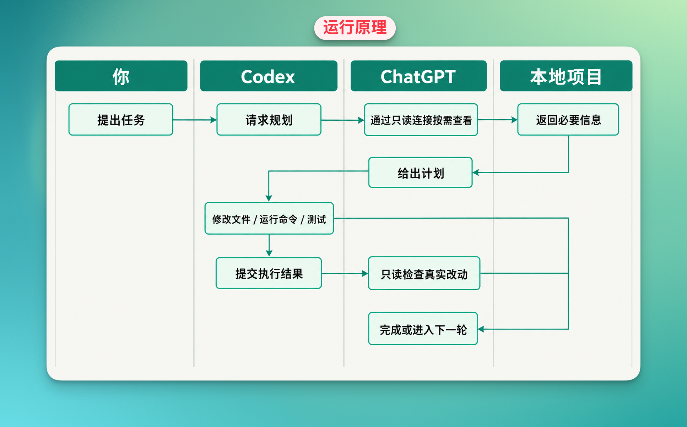
核心分工只有两句：
- ChatGPT 负责想：理解需求、规划、分析和 Review；
- Codex 负责做：修改本地文件、运行命令、测试和修复。
ChatGPT 通过只读连接查看当前任务需要的信息，不能直接修改你的文件。真正会改变本地项目的，仍然是 Codex。
所以这个 Skill 最有价值的地方，不是增加了一个复杂的新概念，而是解决了一个非常实际的问题：
让 ChatGPT 的聊天额度承担更多“思考”，把 Codex 额度留给真正的“执行”。
对于经常把 Codex 用到额度告急的人，这个 5000 Star 的项目确实值得装。
数据说明：项目创建时间、Star 和 Fork 数量核验于 2026 年 9 月 17 日；额度轮次为实际使用估算，不是 OpenAI 官方固定配额。